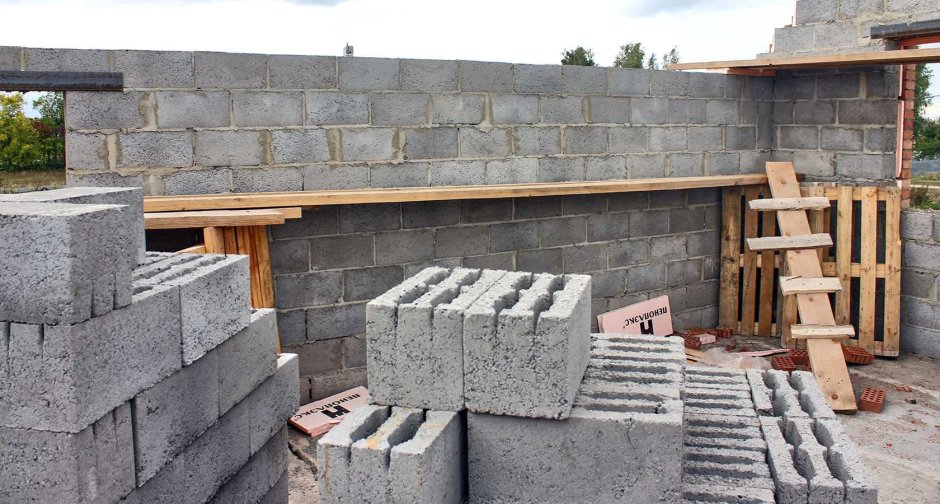
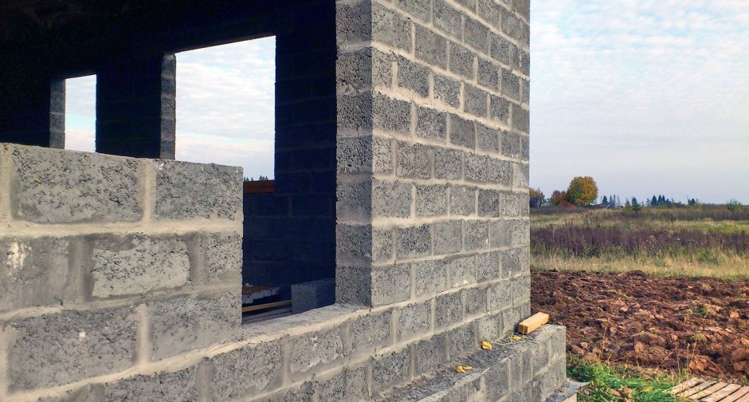
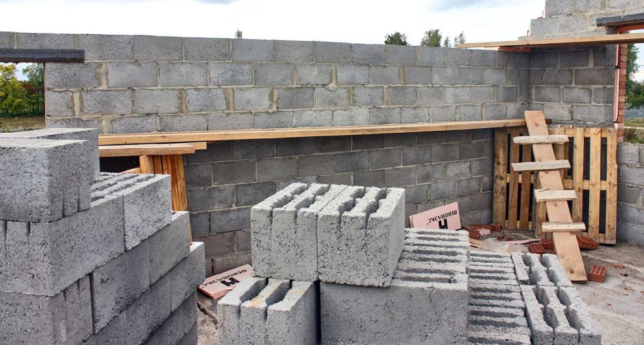
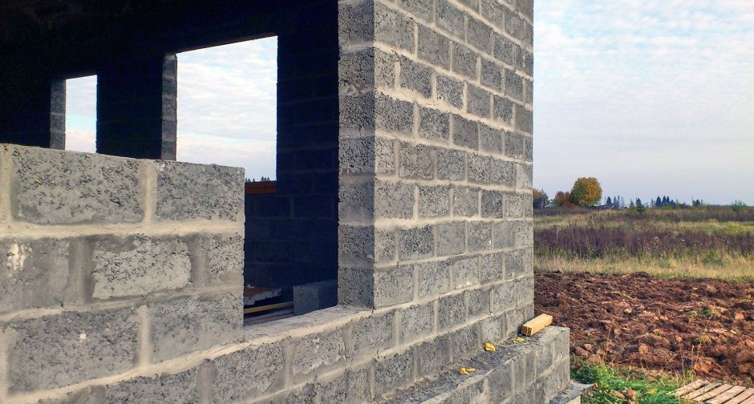

Почему застройщики выбирают дома из керамзитоблоков?
Строительство из керамзитобетонных блоков остаётся одним из самых практичных и надёжных решений для частных домов. Материал сочетает в себе прочность, долговечность, теплоёмкость и экологичность, что делает его оптимальным выбором для нашего климата.
Прочность и долговечность конструкции
Керамзитоблоки обладают высокой несущей способностью и не поддаются растрескиванию даже при значительных перепадах температур. Стены не дают усадки и сохраняют геометрию десятилетиями, обеспечивая долговечность и стабильность здания.
Естественная теплоизоляция
Пористая структура блоков удерживает тепло зимой и сохраняет прохладу летом. Такая терморегуляция снижает расходы на отопление и делает климат внутри дома комфортным без дополнительной нагрузки на обогреватели и кондиционеры.
Устойчивость к влаге и промерзанию
Материал отлично переносит влажный климат и резкие перепады температур. Керамзитобетон не впитывает воду в глубокие слои и быстро высыхает, предотвращая образование грибка и плесени.
Пожаробезопасность
Керамзитобетон не горит и не поддерживает горение, а также не выделяет токсичных веществ при высоких температурах. Это безопасный материал для домов, гаражей, бань и технических помещений.
Хорошая шумоизоляция
Стены из керамзитоблока эффективно снижают уровень внешнего шума. Жить в таком доме комфортно даже рядом с дорогой, стройкой или активной улицей — материал сам по себе гасит вибрации и звуковые волны.
Экономичность строительства
- коробка возводится быстрее из-за большого размера блока;
- требуется меньше цементного раствора;
- меньше расходов на доставку и погрузку;
- отличная теплоизоляция снижает стоимость отопления на долгие годы;
- блоки легче кирпича, что уменьшает нагрузку на фундамент.
Удобство отделки и архитектурная гибкость
Керамзитные блоки легко пилятся, сверлятся, обрабатываются. Их можно штукатурить, облицовывать кирпичом, покрывать сайдингом или декоративной плиткой. Материал подходит как для простых проектов, так и для домов сложной архитектуры.
Экологичность и безопасность
Керамзитобетон состоит из натуральных компонентов — песка, цемента и керамзита (обожжённой глины). Он не выделяет вредных веществ, не вызывает аллергии и поддерживает здоровый микроклимат в доме.
Дом из керамзитных блоков — это практичное, долговечное и тёплое решение, подходящее для частного строительства в любых климатических условиях.

 


